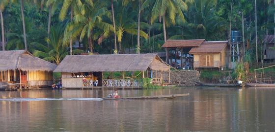
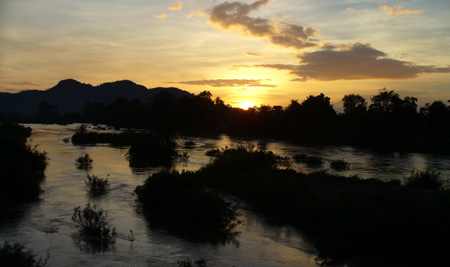
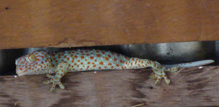
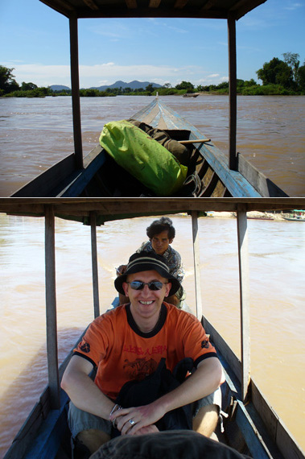
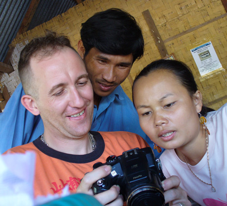
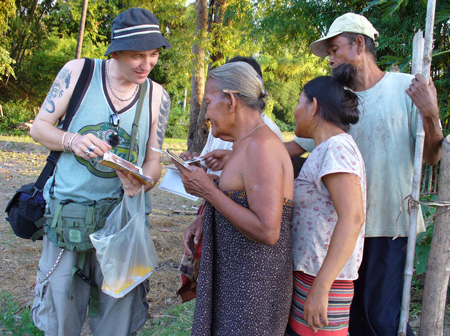
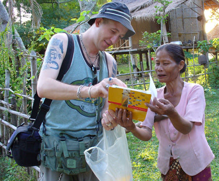

November 29, 2005
A large fertile plain exists at the southern tip of Laos where the Mekong River widens and creates an area known as Si Phan Don, literally translated as Four Thousand Islands. Village life here is ultra relaxed, with few conveniences of the modern world. For some reason, every night delivers a spectacular sunset. This is the area the French diplomat must have had in mind when he made his oft quoted observation of Indochina: "The Vietnamese grow the rice; The Cambodians watch the rice grow; But the Laotians listen to the rice grow." It is easy to understand why some travelers return here time and again.


From the vantage point of a table in the common area of the guest house, I was finally able to take a decent photo of the type of gecko that makes the sound recorded on the '99 Trav-E-Log. The best place to see these fellows is in the beams and cross members of thatched roofs. Moral of the story: The more modern the town, the less likely you will see and hear them.
Have you ever noticed that some of the best places are not really photogenic? In this case, it's not the location, but the people that the lens found. Only spent a couple of days in Si Phan Don, but it already calls me back. Partially because I was fortunate enough to encounter a backpacker in a market parking lot, on his way back to the islands. He assured me we were on the correct bus to get to the town from where one catches a boat to Don Det. We got to talking on the bus trip down, and it became apparent he was a remarkable person. It was easy to let him talk me into staying at the same guest house he returns to every year.
Meet Jeff, a postal worker from Paris, France. He works overtime as much as possible to get in his required hours per year, then grabs his backpack and "travels" to Si Phan Don to enjoy his other life. Last visit he photographed as many people living on the island as possible, returned to France and printed them all out. This visit he is distributing those photos, some to people that have never had a picture of themselves before. Now that is what I call a real diplomat! Several of the snapshots on this page were taken while he was on that mission.
Now my 14-day visa is at an end, and I must re-pack the backpack. Unanswered question: When will I return to Si Phan Don?

Bill